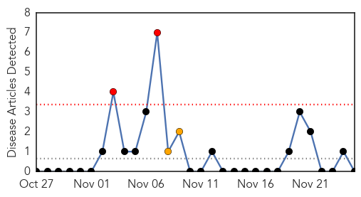
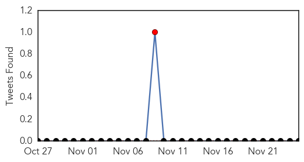
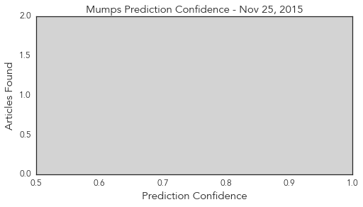
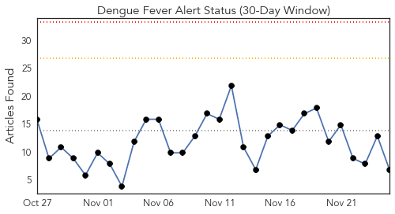
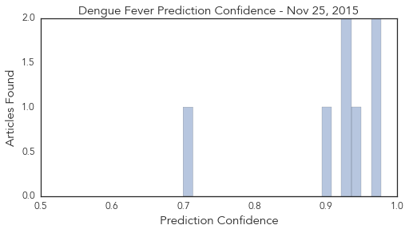

Mumps
30-Day Web Trend
2 alerts, 2 warnings

30-Day Twitter Trend
1 alerts, 0 warnings

Article Locations

Article Confidences
Top Articles:
-
No articles found for Nov 25, 2015
Top Tweets:
-
No tweets found for Nov 25, 2015
Dengue Fever
30-Day Web Trend
0 alerts, 0 warnings

30-Day Twitter Trend
3 alerts, 0 warnings

Article Locations

Article Confidences
Top Articles:
- 0.977
- Confirmed dengue fever deaths increase to 174, reports agency
- 0.964
- ‘Dengue under control’
- 0.947
- Effective steps bring dengue deaths to zero in KP so far
- 0.931
- U.S. Army awards Upstate Medical grant of up to $12 million to develop dengue-virus vaccine
- 0.927
- Dengue scare having little impact on tourism — so far
- 0.896
- Deadly bird flu virus found in France could impact foie gras industry
- 0.700
- CDC official to visit Big Island
Top Tweets:
- 0.548
- Flavivirus news: Ha Noi reports fall in dengue fever cases - Viet Nam News: Viet Nam NewsHa Noi... https://t.co/7GuGxwM5bf pathogenposse